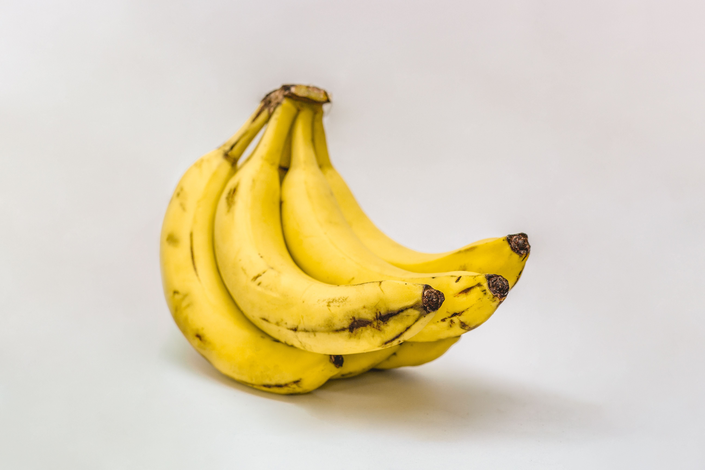

Warum ist die Banane krumm?
Dies ist eine Frage die zwar oft als Scherz benuzt wird,
aber wenn man sie genau betrachtet erstaunlich
interessant ist.
Das passiert nämlich beim heranwachsen der Bananen.
Am Anfang, wenn die Bananen noch klein sind und zwischen
den Blättern herauswachsen, wachsen sie nach unten.
Wenn sie dann größer werden und die Blütenblätter abgefallen
sind, wachsen sie zunehmend
nach oben Richtung Licht.
Das bedeutet: Die Banane ist krumm weil sie
zum Licht wächst.

Warum ist der Himmel blau?
Der Himmel ist blau, weil die Luftmoleküle das Sonnenlicht
streuen. Das Sonnenlicht besteht aus vielen Farben.
Die blauen Lichtwellen sind kürzer und werden stärker
gestreut als die anderen Farben. Deshalb sehen wir den
Himmel blau.